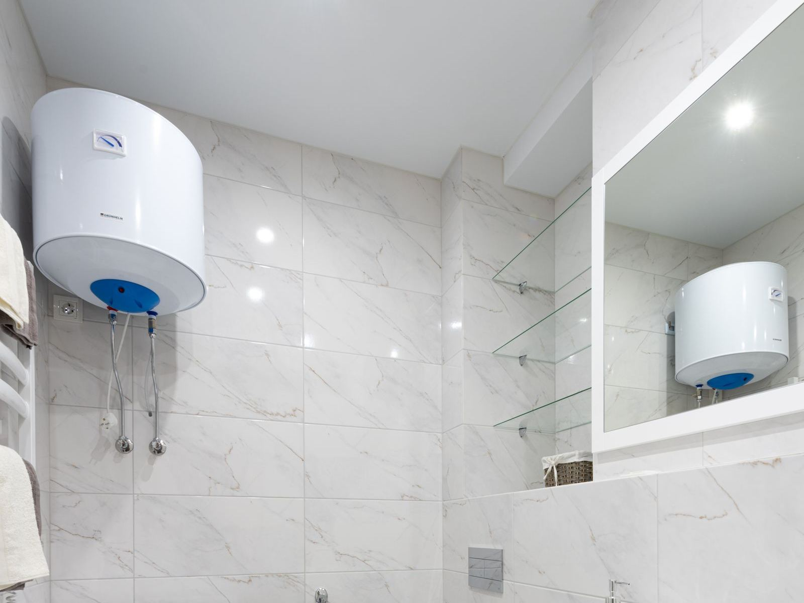

Most electric tank water heaters use two heating elements and two thermostats, and they take turns rather than running together. The upper thermostat has priority: it heats the top of the tank first, then hands power down to the lower element, which does most of the day-to-day work. A high-limit switch (the red reset button above the upper thermostat) cuts power if the water ever overheats. That arrangement makes symptoms a real clue. No hot water at all usually points to the upper element, the upper thermostat, a tripped high-limit, or the breaker. Hot water that runs out quickly usually means the lower element or lower thermostat has quit. In Jersey City, NJ, we see all of these every week.
Resetting a tripped red button or swapping an element blindly rarely solves the problem for long. Our approach in Jersey City homes is to test the whole circuit. We confirm the breaker and the 240-volt supply, measure the resistance of both elements, check each element for a short to ground, and verify that each thermostat opens and closes as it should. We also inspect the wiring at the junction box and thermostat terminals for heat damage. A high-limit that keeps tripping almost always has a reason, such as a thermostat stuck closed or a grounded element, and we find it so the button stays set.
Most electric water heater repairs are finished in one visit. We replace burned-out elements (draining the tank first and refilling it completely before power goes back on, since an element energized in open air burns out in seconds), replace upper and lower thermostats and high-limit switches, repair scorched wiring and loose connections, and flush out sediment that is burying the lower element. When the tank is leaking or the heater has passed about twelve to fifteen years, we tell you honestly and walk you through replacement. New installations include confirming that the circuit, breaker, and wire size match the heater, plus an expansion tank, drain pan, and seismic straps wherever code calls for them. We can also talk through a heat pump water heater if lower operating costs appeal to you. Call (201) 361-9428 for electric water heater service in Jersey City.
Most of our service calls are for Water Heater Repair in Jersey City and Water Heater Installation in Jersey City. Start there if you're not sure what you need.

How to Tell Something Is Wrong
A heater that is starting to struggle rarely hides it for long, and the clues are easy to spot once you know them. Here are the most common indicators that it's time to call a professional:
- Water dripping from an element gasket or pooling under the tank
- Water that comes out scalding hot
- Hot water that runs out after just a few minutes
- A red reset button that keeps tripping
- A burning smell or a discolored access panel near the thermostat
- A hissing or sizzling noise near the lower element
- A circuit breaker for the heater that will not stay on
- Cold water everywhere, even after waiting
Act Before It Gets Worse
Most water heater failures start small: a popping sound from sediment, a damp spot under the drain valve, or a shower that goes lukewarm a few minutes sooner each week. Call Jersey City Water Heater at (201) 361-9428 at the first sign of trouble.
Common Questions We Hear
What a Trained Technician Brings to the Job
Two things make electric water heater repair trickier than it looks: the power involved and the overlap between symptoms. Every element and thermostat connects to 240-volt terminals, and those terminals stay live until the breaker is off and the circuit is tested dead. On the diagnostic side, a heater that will not heat might have a failed element, a bad thermostat, a tripped reset, or a wiring problem, and a reset that keeps tripping is a warning, not an annoyance. Guessing gets expensive fast.
What a trained technician brings is certainty. We test instead of guessing, from element resistance and ground-fault checks to thermostat operation and supply voltage. We repair heat-damaged wiring properly, tighten or replace terminal connections, and refill the tank completely before power goes on, so a new element is never destroyed by a dry fire. And because some electric heaters are simply worn out, we give you a straight answer on repair versus replacement, including whether a heat pump water heater might make sense for your home.
From Your Call to Hot Water
We work through a clear, repeatable process so you always know what's happening and what it will cost. Here's what you can expect when you choose Jersey City Water Heater:
Meter-Based Diagnosis
Before a part is ordered, we confirm power at the heater and test each element, thermostat, and connection to pinpoint what stopped the water from heating.
What Failed and What It Costs
We show you what failed and why, then we give a firm price before starting. If the tank is leaking or the heater is near the end of its life, we tell you plainly.
Safe Repair
One visit usually does it. We replace the failed part, repair any heat-damaged wiring, and refill the tank completely before power goes back on.
Full Performance Test
Before we leave, we watch the heater run, measure amp draw on each element, and confirm the thermostats hand off correctly.
Simple Ways to Extend Your Water Heater's Life
Most of the failures we see could have been delayed for years with basic upkeep. Here are our recommendations:
- After any draining, refill the tank fully and run a hot faucet before restoring power
- Set both thermostats near 120 degrees, because hotter water costs more and can scald
- Flush the tank regularly to keep minerals from piling up around the lower element
- Replace a worn anode rod before corrosion moves on to the tank itself
- Test the temperature and pressure relief valve once a year
- In hard water areas, a softener or low-watt-density elements can extend element life
- If the reset button trips, have it checked rather than pressing it over and over
Should You DIY or Call a Pro?
A few tasks, like checking the temperature setting or lifting the relief valve lever to test it, are fine for homeowners, but most water heater work involves gas lines, venting, 240-volt circuits, or a tank full of scalding water, and that belongs with a professional. Here's a comparison:
| Factor | DIY Attempt | Professional Service |
|---|---|---|
| Diagnosis | Swap parts until the water heats | Meter readings pinpoint the failed part |
| Electrical Safety | Working near 240V without verifying it is off | Circuit tested dead, then work begins |
| Element Replacement | Dry-fired element burns out instantly | Proper gasket seal and full refill |
| High-Limit Trips | Reason for the trip ignored | Stuck thermostat or grounded element traced |
| Sediment | Sediment left burying the lower element | Sediment flushed when an element is replaced |
| Outcome | Symptom patched, cause remains | Lasting repair, confirmed by testing |
Book a Visit Today
Cold showers and damp floors don't get better on their own. Jersey City Water Heater can have a technician headed your way soon.
Call (201) 361-9428 TodayElectric Water Heater Services Near Jersey City
Our service area reaches well past the city limits. Choose your community for local details.